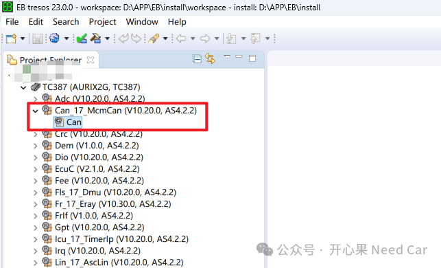
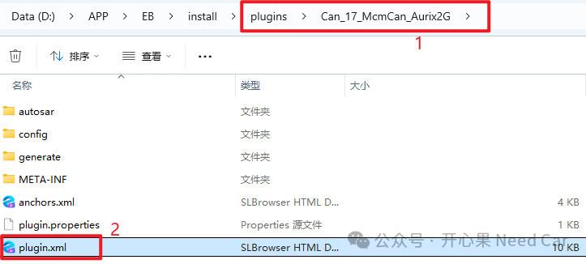
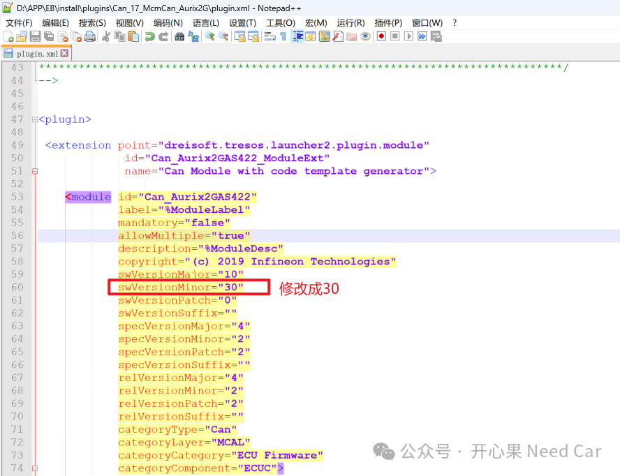
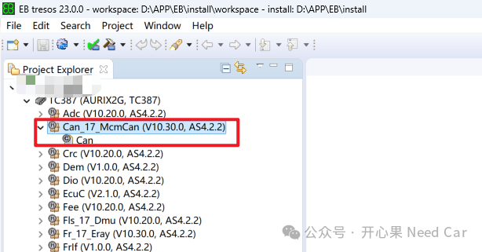
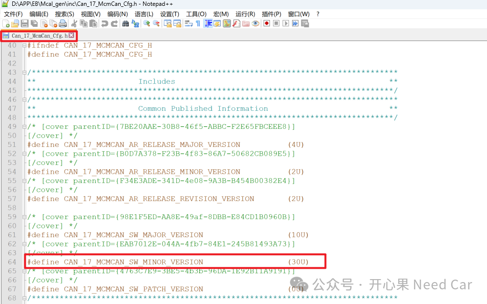

开心果 Need Car · 2025-04-21T06:34:00+08:00 · 微信原文
1、Mcal版本不匹配Error
Can_17_McmCan.c:102:2: error: #error "CAN_17_MCMCAN_SW_MINOR_VERSION does not match. "#error "CAN_17_MCMCAN_SW_MINOR_VERSION does not match. "
Can_17_McmCan.c:102:2: error: #error "CAN_17_MCMCAN_SW_MINOR_VERSION does not match. "
#error "CAN_17_MCMCAN_SW_MINOR_VERSION does not match. "
2、修改Mcal版本号





往期精彩回顾
点击下方关注，一起聊聊Autosar/嵌入式，如果需要，联系作者进群，给你更专业的解答